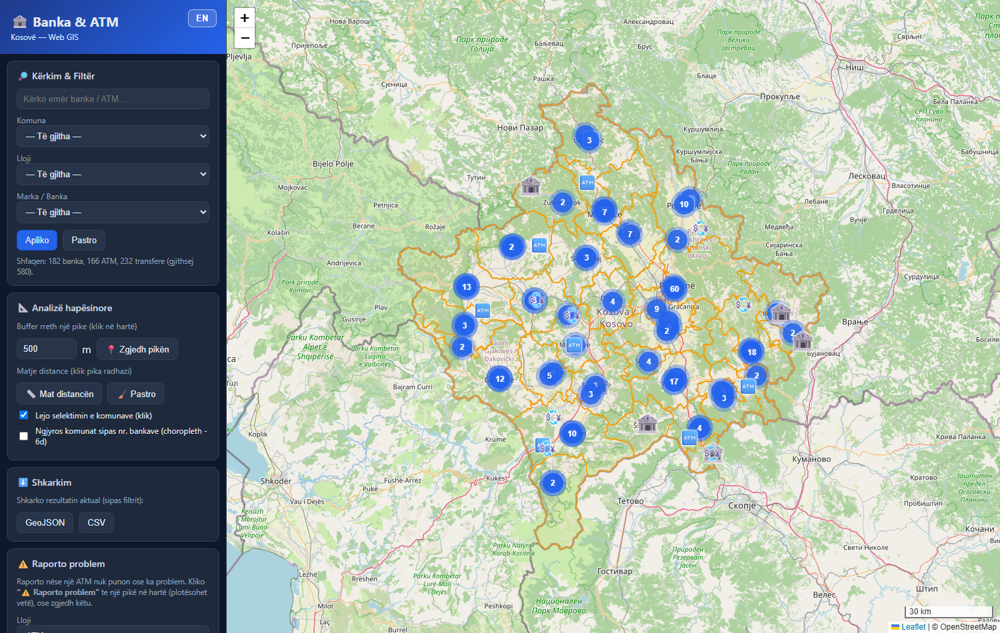
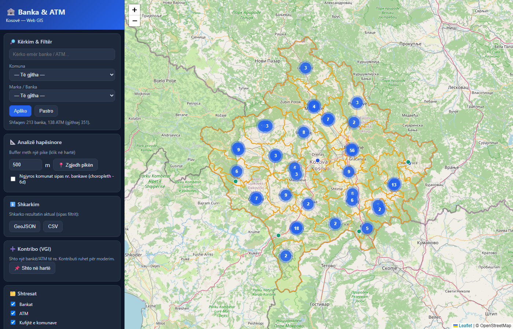
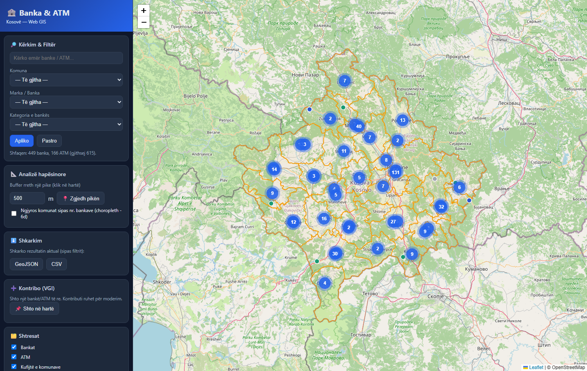
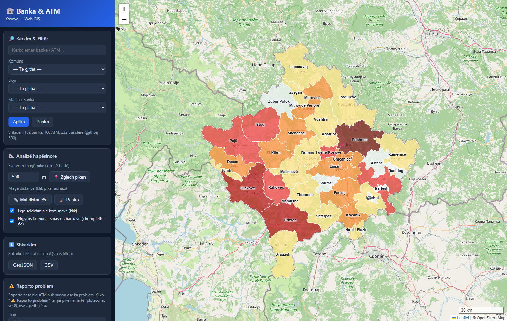
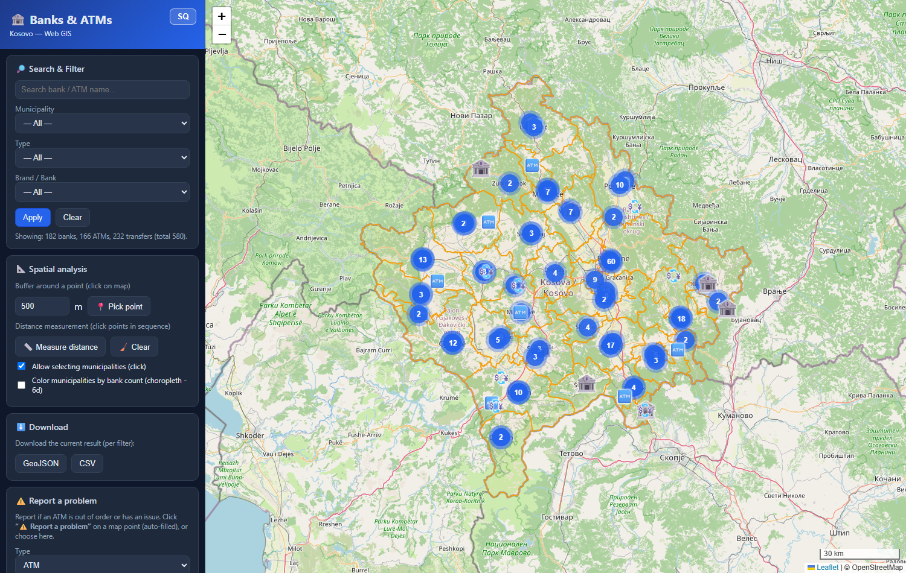
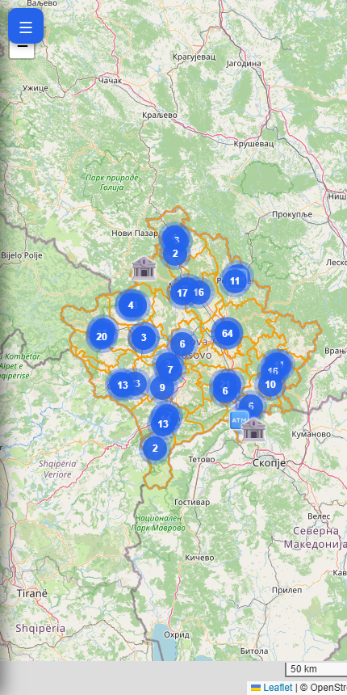

UNIVERSITETI I PRISHTINËS "HASAN PRISHTINA"
FAKULTETI I INXHINIERISË SË NDËRTIMIT
Departamenti i Gjeodezisë
DETYRË
LËNDA: Web GIS
TEMA: Krijimi i një WebGIS-i për Bankat, ATM-të dhe pikat e transferit të parave në Kosovë
Mentori:
Prof. Asoc. Dr. Bashkim IDRIZI |
Punoi:
______________________ |
Prishtinë, 2026
Përmbajtja
- Kërkesat e detyrës
- Hyrja
- 1. Përzgjedhja e temës dhe territorit; qëllimet, grupet e interesit, shfrytëzimi
- 2. Përcaktimi i përmbajtjes gjeografike
- 3. Përcaktimi i elementeve matematike
- 4. Dizajnimi i arkitekturës së aplikacionit
- 5. Krijimi i çelësit hartografik
- 6. Elementet redaktuese/ndihmëse dhe funksionet e aplikacionit
- 7. Ndërtimi i aplikacionit (web + mobil)
- 8. Publikimi / shpërndarja e aplikacionit
- 9. Krijimi i web-serviseve (WMS/WFS)
- 10. Përdorimi i web-serviseve të krijuara
- Përfundime dhe referenca
Kërkesat e detyrës
Detyra punohet individualisht dhe është kusht për hyrje në provim. Studenti përzgjedh vetë territorin, shkallën, vëllimin dhe temën.
- Përzgjedhja e temës dhe territorit; qëllimet, grupet e interesit, shfrytëzimi
- Përcaktimi i përmbajtjes gjeografike (web-servise/shtresa të hapura + shtresa personale)
- Përcaktimi i elementeve matematike
- Dizajnimi i arkitekturës së aplikacionit
- Krijimi i çelësit hartografik dhe standardeve për paraqitje multishkallore
- Elementet redaktuese/ndihmëse dhe funksionet: a) Crowdsourcing/VGI, b) shkarkim sipas kriterit, c) kërkim/selektim/analizë hapësinore, d) simbolizim sipas kritereve
- Ndërtimi i aplikacionit: a) web, b) mobil
- Publikimi / shpërndarja
- Krijimi i web-serviseve (WMS, WFS)
- Përdorimi i web-serviseve të krijuara
Hyrja
- Zhvillimi i teknologjisë së informacionit ka transformuar Sistemet e Informacionit Gjeografik (GIS), duke i bërë hartat interaktive dhe të qasshme përmes internetit. WebGIS-i ndërthur hartat digjitale me teknologjitë web për vizualizim, analizë dhe qasje të lehtë në të dhënat hapësinore.
- Shërbimet financiare — bankat, bankomatet (ATM) dhe pikat e transferit të parave — janë infrastrukturë e përditshme për qytetarët; vendndodhja e tyre është informacion tipik hapësinor që përfiton nga paraqitja në hartë interaktive.
- Ky projekt ndërton një aplikacion WebGIS që paraqet bankat, ATM-të dhe transferet në të gjithë Kosovën, me filtrim, analizë hapësinore, kontribut nga përdoruesit (VGI), raportim problemesh dhe shkarkim të dhënash.
- Teknologjitë: QGIS, përpunim i të dhënave me skripte, GeoJSON, Leaflet, Supabase/PostGIS, GeoServer (WMS/WFS) dhe GitHub Pages.
- Aplikacioni është publik dhe live: https://leunisf.github.io/web-gis-bank/

Figura 1. Pamja e përgjithshme e aplikacionit WebGIS (versioni web).
1. Përzgjedhja e temës dhe territorit; qëllimet, grupet e interesit dhe shfrytëzimi
Tema: WebGIS për bankat, ATM-të dhe transferet në Kosovë. Territori: e gjithë Republika e Kosovës, e ndarë në 38 komuna.
Pse kjo temë:
- Të dhëna reale, me interes të gjerë publik (qytetarë, biznese, turistë).
- Mundëson të gjitha kërkesat e detyrës: shumë pika (gjeometri pikësore), poligone (komunat), analiza hapësinore dhe shërbime web.
Qëllimet:
- Vizualizimi i bankave/ATM-ve/transfereve në hartë interaktive.
- Kërkimi dhe filtrimi sipas komunës, llojit dhe markës.
- Analiza hapësinore (buffer, matje distance, dendësi për komunë).
- Kontribut nga përdoruesit dhe raportim i problemeve (p.sh. ATM jashtë shërbimit).
Grupet e interesit:
- Qytetarët — gjejnë bankën/ATM-në më të afërt dhe raportojnë probleme.
- Bankat / institucionet financiare — pasqyrë e shpërndarjes dhe njoftim për probleme.
- Studiues/analistë — analiza e mbulimit financiar sipas komunave.
- Studentët e GIS-it — shembull praktik i një WebGIS-i të plotë.

Figura 2. Territori i projektit — shtrirja mbi Kosovën dhe 38 komunat.
2. Përcaktimi i përmbajtjes gjeografike
Të dhënat vijnë nga web-servise/shtresa të hapura dhe nga shtresa personale të përpunuara gjatë projektit.
a) Të dhëna nga shtresa të hapura / web-servise:
- OpenStreetMap (OSM) — harta bazë (tiles) dhe pikat e shërbimeve financiare.
- HOTOSM (Humanitarian OSM Team) — eksport financial services points për Kosovën (704 pika).
- Basemaps: OpenStreetMap, Carto Light dhe Esri Satellite (XYZ tiles).
b) Shtresa personale (të përpunuara):
- Kufijtë e 38 komunave (poligone) — riprojektuar dhe të pastruara.
- Shtresa e kombinuar dhe e klasifikuar e pikave, e ndarë në tri lloje:
| Lloji | Numri | Përshkrim |
|---|
| 🏦 Bankë | 182 | Banka komerciale të licencuara (Raiffeisen, ProCredit, TEB, NLB, BKT, BPB, Banka Ekonomike, etj.) |
| 🏧 ATM | 166 | Bankomatet |
| 💱 Transfer | 232 | Western Union, Ria/Capital, MoneyGram, këmbimore, etj. |
| Gjithsej | 580 | |
Përpunimi i të dhënave (përmbledhje):
- Kombinim i të dhënave OSM me eksportin HOTOSM, me heqje dublikatash sipas
osm_id.
- Pastrim i emrave të gabuar/jo-relevantë (p.sh. emra personash, "status bank" por jo banka reale).
- Klasifikim automatik në bankë / ATM / transfer sipas etiketave (
amenity) dhe markës.
- Caktim i komunës për çdo pikë me algoritmin pikë-në-poligon (ray casting).
Figura 3. Përmbajtja gjeografike: tri llojet e pikave mbi territorin e Kosovës.
3. Përcaktimi i elementeve matematike
Sistemet koordinative (CRS):
- Pikat (banka/ATM/transfer): EPSG:4326 (WGS84) — gjeografik.
- Kufijtë e komunave (burimi): KOSOVAREF01 / Balkans Zone 7 (EPSG:6870/9141) — Transverse Mercator mbi elipsoidin GRS80.
- Paraqitja në web: EPSG:3857 (Web Mercator) — standardi i tiles-ve.
Riprojektimi (komunat 6870 → 4326): u realizua me formulat e inverse Transverse Mercator, me parametrat:
- Meridiani qendror (CM) = 21°, faktori i shkallës k₀ = 0.9999, False Easting = 7 500 000 m, False Northing = 0, elipsoid GRS80.
- Hapat: gjerësia ndihmëse (footprint latitude φ₁ përmes serisë së harkut meridional), rrezet e kurbaturës N₁ dhe R₁, dhe seritë korrigjuese deri në rendin e 6-të/8-të.
Funksione të tjera matematike në aplikacion:
- Matje distance mbi sferë me formulën haversine (rezultat në m/km).
- Pikë-në-poligon (ray casting) për caktimin e komunës.
- Shkalla dhe nivelet e zmadhimit (zoom 7–19), me shkallë grafike dinamike poshtë-djathtas.
Figura 4. Elementet matematike: shkalla grafike (poshtë-djathtas) dhe vegla e matjes së distancës.
4. Dizajnimi i arkitekturës së aplikacionit
Arkitektura ndjek modelin klasik me tri nivele (three-tier):
NIVELI I TE DHENAVE NIVELI LOGJIK (server) NIVELI PREZANTUES
+-------------------+ +--------------------------+ +--------------------+
| GeoJSON (statik) | | GeoServer -> WMS / WFS | | Shfletuesi (web) |
| Shapefile baze | ---> | Supabase -> PostGIS/API| ---> | Leaflet + HTML/CSS|
| Komunat, pikat | | GitHub Pages -> hosting | | + JavaScript |
+-------------------+ +--------------------------+ +--------------------+
Data tier Logical / middle tier Presentation tier
HTTP request <=> HTTP response (URL/HTTP/HTML/JSON)
- Niveli i të dhënave (gjeodatabaza): të dhënat hapësinore në GeoJSON + shapefile bazë, plus databaza online në Supabase (PostGIS) për kontributet dhe raportimet.
- Niveli logjik: GeoServer publikon shtresat si web-servise (WMS/WFS); Supabase ofron REST-API mbi PostGIS; GitHub Pages strehon faqen.
- Niveli prezantues: harta interaktive Leaflet në HTML/CSS/JavaScript, e qasshme nga kompjuteri dhe telefoni.
4.1. Përpunimi i të dhënave
Të dhënat burimore (OSM/HOTOSM + kufijtë e komunave) u organizuan dhe u kontrolluan në QGIS. Konvertimi/pastrimi (shapefile → GeoJSON, riprojektim, kombinim, klasifikim, caktim komune) u automatizua me skripte të dedikuara, duke prodhuar skedarët: bankat.geojson, atm.geojson, transferet.geojson, komunat.geojson.
4.2. Publikimi i të dhënave në GeoServer
Krijohet një workspace (webgis), pastaj një store ku ngarkohet shapefile-i bazë. Shtresat publikohen si WMS/WFS me CRS dhe shtrirje të përcaktuar; simbolizimi mund të jepet me SLD.
4.3. Paraqitja e hartës (faqja HTML)
Faqja kryesore index.html ndërton ndërfaqen; logjika në app.js; stili në style.css. Të dhënat ngarkohen si GeoJSON dhe (opsionalisht) si shtresa WMS nga GeoServer.
4.4. Qasja e përdoruesve
Aplikacioni publikohet online me GitHub Pages dhe është i qasshëm nga çdo pajisje me shfletues.
5. Krijimi i çelësit hartografik
- Çelësi hartografik (legjenda) shpjegon çdo simbol, që harta të jetë e lexueshme për të gjitha grupet e interesit.
- Tri llojet kanë ikona dhe ngjyra të dallueshme, me ikonën e bankës pak më të madhe (pesha vizuale).
| Simboli | Kuptimi | Ngjyra |
|---|
| 🏦 | Bankë | blu |
| 🏧 | ATM | jeshile |
| 💱 | Transfer (WU, Ria, këmbim…) | vjollcë |
| ▭ | Kufi komune | portokalli |
- Paraqitje multishkallore (clustering): në zoom të vogël pikat grupohen në clustera me numër; në zoom të madh shfaqen individualisht me ikonën përkatëse.
- Legjenda përditësohet automatikisht edhe kur aktivizohet simbolizimi tematik (choropleth).

Figura 5. Çelësi hartografik dhe paraqitja multishkallore (clustering).
6. Elementet redaktuese/ndihmëse dhe funksionet e aplikacionit
6.1. Crowdsourcing / VGI (editim i kufizuar)
- Përdoruesi mund të shtojë një bankë/ATM/transfer të re duke klikuar në hartë dhe duke plotësuar formën (lloji, emri/marka).
- Kontributi ruhet si "pending" — pra editim i kufizuar: shfaqet, por moderohet para se të bëhet zyrtar.
- Përdoruesi mund edhe ta fshijë pikën që ka shtuar vetë (buton "🗑️ Fshi këtë pikë").
- Raportim problemi: për çdo pikë ekziston butoni "⚠️ Raporto problem", ku zgjidhet lloji (ATM nuk punon, jashtë shërbimit, vendndodhje e gabuar, e mbyllur, tjetër) dhe shkruhet një përshkrim/koment.
Të dhënat e kontributeve/raportimeve ruhen në databazën Supabase (PostGIS):
| Tabela | Përmbajtja | Fushat kryesore |
|---|
contributions | Pikat e shtuara nga VGI | fclass, name, banka, lon, lat, geom, status |
reports | Raportimet e problemeve | fclass, banka, problem, koment, lon, lat, status |
Gjeometria (geom) gjenerohet automatikisht nga koordinatat me një trigger PostGIS; qasja kontrollohet me RLS (Row Level Security): shtim publik si pending, moderim vetëm nga prodhuesi.
6.2. Shkarkim i të dhënave sipas kriterit
- Përdoruesi shkarkon rezultatin aktual (pas filtrit) në dy formate:
- GeoJSON — format tekstual i bazuar në JSON për të dhëna hapësinore (pika/linja/poligone + atribute).
- CSV — tabelë me lloji, emri, marka, komuna, koordinata.
6.3. Kërkim, selektim dhe analizë hapësinore
- Kërkim me tekst (emër banke/marke) dhe filtra sipas: Komunës, Llojit (bankë/ATM/transfer) dhe Markës.
- Analizë buffer: kliko një pikë dhe një rreze (m) → numërohen sa banka/ATM/transfere bien brenda rrezes.
- Matje distance: kliko pika radhazi → vizatohet vija dhe llogaritet distanca kumulative (haversine).
- Ndalim i selektimit të komunave për lehtësi gjatë analizave (klikimi kalon në hartë).
6.4. Simbolizim sipas kritereve të përdoruesit
- Choropleth: me një klik, komunat ngjyrosen sipas numrit të bankave (sa më e errët, aq më shumë), pikat fshihen dhe shfaqet emri i komunës në qendër të secilit poligon.
- Funksioni i kërkesës 6.c (numri/analiza për komunë) lidhet drejtpërdrejt me simbolizimin tematik të 6.d.

Figura 6. Simbolizim tematik (choropleth) sipas numrit të bankave për komunë, me emrat e komunave.
7. Ndërtimi i aplikacionit
7.1. Versioni për web
- Ndërfaqe me panel anësor (kërkim/filtra, analiza, shkarkim, raportim, VGI, shtresat, legjenda) dhe hartë kryesore.
- Header me titull/identifikim; statusi me sistemin koordinativ, shkallën dhe autorin.
- Vegla standarde: kontroll shtresash, zgjedhje basemap, zoom in/out, shkallë grafike.
- Dygjuhësi SQ/EN: butoni në header ndërron gjuhën dhe ruan zgjedhjen.
Figura 7. Versioni web (shqip).

Figura 8. I njëjti aplikacion në anglisht (ndërrim gjuhe me një klik).
7.2. Versioni për mobil
- Dizajn responsive: paneli kthehet në meny të palosshme (butoni ☰), harta zë tërë ekranin.
- Funksionet kryesore ruhen; mund të vendoset edhe një shortcut në ekranin kryesor të telefonit.

Figura 9. Versioni për mobil (ndërfaqe e përshtatur, paneli i palosur).
8. Publikimi / shpërndarja e aplikacionit
- Kodi ruhet në GitHub (kontroll versioni me Git): krijimi i një repository publik dhe ngarkimi i skedarëve (
index.html, app.js, style.css, data/, etj.).
- Aktivizimi i GitHub Pages (dega
main, root) gjeneron linkun publik.
- Versionim: u shënua një version stabël v1.0 (tag + release); për të shmangur cache-in e vjetër përdoret cache-busting (
?v=N).
- Live: https://leunisf.github.io/web-gis-bank/
9. Krijimi i web-serviseve (WMS/WFS)
- Për shpërndarjen e të dhënave te palë të treta përdoret GeoServer (i përgatitur me
docker-compose).
- Pas publikimit të shtresave, GeoServer ofron automatikisht:
- WMS (Web Map Service) — paraqitje vizuale e hartës si imazh; shtresat shfaqen pa shkarkuar të dhënat origjinale.
- WFS (Web Feature Service) — qasje direkte në të dhënat vektoriale dhe atributet (lexim/analizë nga aplikacione të tjera).
- Aplikacioni është i integruar me GeoServer: te paneli i shtresave ka opsionin "WMS nga GeoServer" dhe butonin "Test WFS"; mjafton të vendoset URL-ja (
GEOSERVER.url) për t'i aktivizuar live.
10. Përdorimi i web-serviseve të krijuara
- Brenda aplikacionit web — shtresa WMS shtohet drejtpërdrejt në Leaflet; "Test WFS" merr objektet (GetFeature) nga GeoServer-i.
- Në QGIS / softuer të tjerë GIS — duke shtuar lidhje WMS/WMTS ose WFS me URL-në e GeoServer-it, shtresat shfaqen dhe përdoren në kohë reale për analiza.
Përfundime dhe punë e ardhshme
- U realizua një WebGIS i plotë për bankat, ATM-të dhe transferet në Kosovë, që plotëson të 10 kërkesat e detyrës.
- Punë e ardhshme: vendosja live e GeoServer-it (WMS/WFS realë), pasurim i atributeve të bankave dhe pasqyrë administrative e raportimeve/kontributeve.
Plotësimi i kërkesave (përmbledhje)
| # | Kërkesa | Statusi |
|---|
| 1 | Temë, territor, qëllime, grupe interesi | ✔ |
| 2 | Përmbajtja gjeografike (open + personale) | ✔ |
| 3 | Elementet matematike (CRS/riprojektim) | ✔ |
| 4 | Arkitektura e aplikacionit | ✔ |
| 5 | Çelësi hartografik + multishkallë | ✔ |
| 6a | Crowdsourcing/VGI + raportim | ✔ |
| 6b | Shkarkim (GeoJSON/CSV) | ✔ |
| 6c | Kërkim/selektim/analizë (buffer, matje) | ✔ |
| 6d | Simbolizim sipas kritereve (choropleth) | ✔ |
| 7 | Versioni web + mobil | ✔ |
| 8 | Publikimi (GitHub Pages) | ✔ |
| 9 | Web-servise WMS/WFS (GeoServer) | ✔ |
| 10 | Përdorimi i web-serviseve | ✔ |
Referenca dhe linqe
- Aplikacioni live: https://leunisf.github.io/web-gis-bank/
- Kodi (GitHub): https://github.com/leunisf/web-gis-bank
- Të dhënat: OpenStreetMap (openstreetmap.org); HOTOSM Export (export.hotosm.org)
- Teknologjitë: Leaflet (leafletjs.com), GeoServer (geoserver.org), Supabase/PostGIS (supabase.com, postgis.net), QGIS (qgis.org)